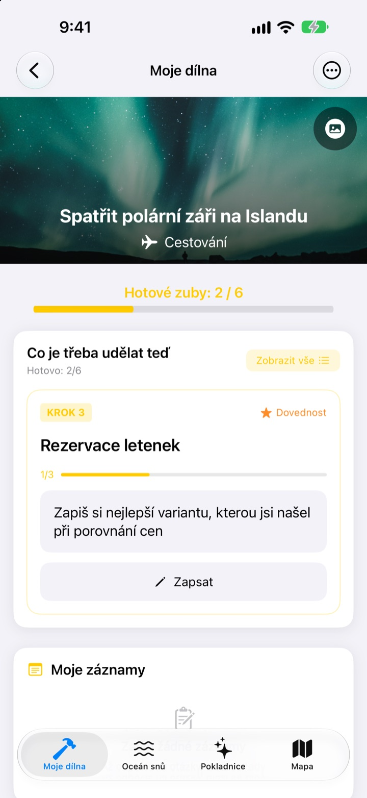
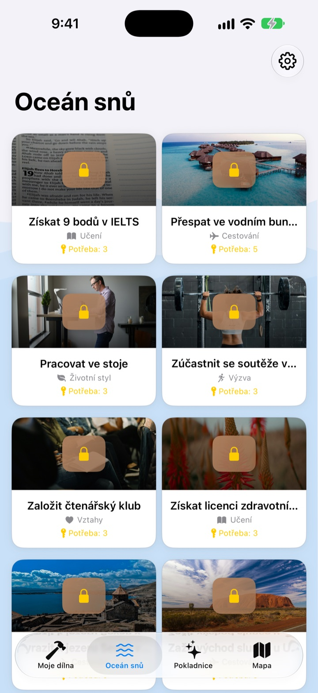
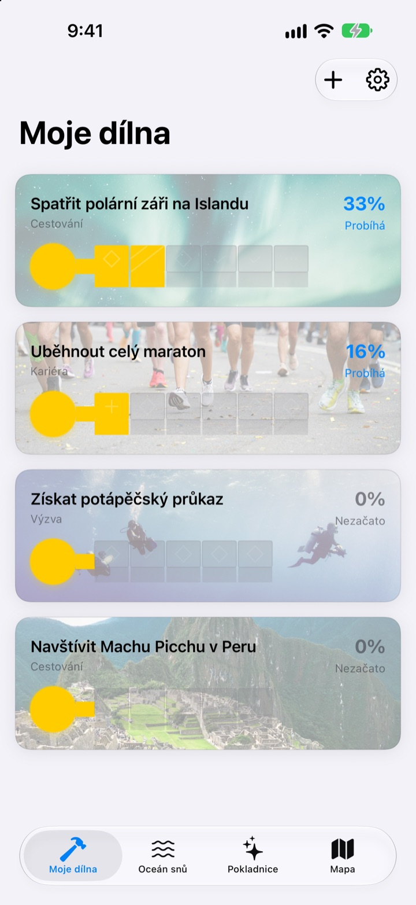
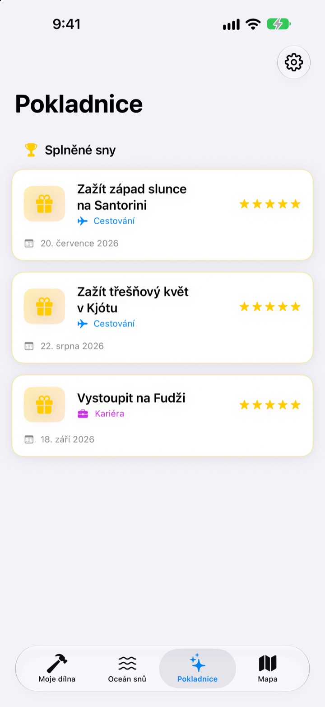

Sny si jen
nezapisujte
Vyberte si sen a malé kroky, které k němu vedou, se stanou zuby klíče. Odpovídejte na dnešní krok otázku po otázce a než se nadějete, truhla snů je otevřená.
Koupíte jednou a máte všechny funkce. Bez předplatného a bez reklam.

Dokončete klíč
Snu vidět polární záři na Islandu zbývají dva kroky. Odpovězte na každou otázku jedním řádkem (nebo ji nechte prázdnou) a klepněte na Další. Každý hotový krok vyplní jeden zub a plný klíč otevře truhlu.
Sepsali jste si seznam snů a pak na něj zapomněli?
„Vidět polární záři“ je tak velké, že nevíte, kde začít, a tak to na seznamu leží roky. Dream Seeker sen rozdělí na kroky, které zvládnete ještě dnes, třeba zjistit sezonu, našetřit peníze a koupit letenky, a ukáže vám jen ten jeden, který je na řadě.
Vybírejte z více než 590 snů
Cestování, zážitky, úspěchy, zdraví, učení a vztahy. Sny ze šesti oblastí plují v truhlách po Oceánu snů. Vezměte si ten, který se vám líbí, do dílny a kroky k němu už jsou rozdělené.
Váš sen tam není? Vytvořte si ho sami: název, oblast a potřebné kroky.

Jeden zub po druhém, jen tolik, kolik dnes zvládnete
V Mé dílně hned vidíte, jak daleko je klíč každého snu. Aktuální krok je nahoře a odpověďmi na jeho otázky vyplníte jeden zub.
Odpovědi a fotky se ukládají do Mých záznamů a na časové ose postupu si můžete projít celou cestu.

Splněné sny do pokladnice, místa na mapu
Vyplňte všechny zuby a otevřete truhlu. Splněné sny se s datem ukládají do pokladnice a pozastavené sny tam čekají, dokud se k nim nevrátíte.
Sny spojené s místem se zobrazí na mapě, takže vidíte všechna místa, kam se chcete podívat.

Začněte ve třech krocích
- 1
Vyberte sen
Klepněte na truhlu v Oceánu snů a zvolte Vzít do dílny.
- 2
Odpovězte na dnešní krok
Odpovězte postupně na otázky horního kroku a vyplníte zub.
- 3
Otevřete truhlu
Když jsou všechny zuby vyplněné, klíč je hotový a truhla se otevře.
Šest oblastí v Oceánu snů
- Cestování
- Spatřit polární záři na Islandu · Zažít západ slunce na Santorini
- Zážitek
- Seskočit z letadla s padákem · Zalétat si na paraglidingu
- Úspěch
- Uběhnout celý maraton · Vyrazit k základnímu táboru Mount Everestu
- Zdraví
- Zvládnout 20 shybů · Vyrýsovat břišní svaly
- Učení
- Mluvit plynně anglicky · Mluvit plynně francouzsky
- Vztahy
- Procestovat svět s rodiči · Strávit měsíc na Jeju s přáteli
V každé oblasti je skoro sto snů. Vlastní sen vytvoříte v Mé dílně pomocí Přidat nový sen.
Jeden nákup, všechno v ceně
Aplikace
- Přes 590 snů s otázkami ke každému kroku
- Vlastní sny
- Moje záznamy s fotkami a časová osa postupu
- Pokladnice a mapa
- Režim pěstování snů
- Budoucí aktualizace
Podpořte vývojáře (dobrovolně)
- Pokud vám aplikace pomáhá, můžete v Nastavení poslat malé spropitné
- Spropitné nic neodemyká. I bez něj máte všechny funkce
Jednorázové spropitné, žádné předplatné.
V aplikaci se nic dalšího neplatí. Žádný účet, žádné reklamy.
Časté otázky
Jak začít?
Na kartě Oceán snů klepněte na truhlu, která se vám líbí, a zvolte Vzít do dílny. V Mé dílně odpovídejte na otázky aktuálního kroku a zuby se budou postupně vyplňovat. Až budou všechny, truhlu otevřete.
Můžu přidat vlastní sen?
Ano. V Mé dílně klepněte na Přidat nový sen a zadejte název, oblast a kroky, které k němu vedou.
Jak sen pozastavit nebo se k němu vrátit?
V nabídce rozpracovaného snu zvolte Vzdát se tohoto snu a sen se přesune do Pozastavených snů v pokladnici. Tam klepnutím na Začít znovu vrátíte sen do dílny, nebo ho pomocí Smazat natrvalo odstraníte.
Co je režim pěstování snů?
Obrazovka, kde sny spravujete jako výstup na horu. Zapnete ho a vypnete v Nastavení > Zobrazení. Můžete v něm hlídat termíny jednotlivých kroků a překážky jako peníze a čas, jako u projektu.
Nezobrazují se fotky.
Některé fotky na pozadí se stahují z internetu. Zkontrolujte připojení. Bez připojení se zobrazí výchozí obrázek.
Můžu záznamy přenést do nového iPhonu?
Záznamy se ukládají jen v tomto zařízení, bez účtu a synchronizace. Když nový iPhone obnovíte ze zálohy na iCloudu nebo v počítači, přenesou se spolu s daty ostatních aplikací.
Dá se v aplikaci něco dokoupit?
Ne. S aplikací máte všechny funkce. Spropitné v Nastavení je tu jen pro případ, že chcete poděkovat.
Posílají se moje sny a záznamy někam?
Ne. Není tu účet, reklamy ani analytické nástroje. Vaše sny, záznamy a fotky zůstávají v zařízení.
Jak vás kontaktovat?
Chyby, nápady nebo cokoli jiného posílejte přes Poslat zpětnou vazbu v Nastavení aplikace nebo zprávou na Instagramu (@lee25_ios).
Dotazy nebo problémy? Napište na leeo@kakao.com.